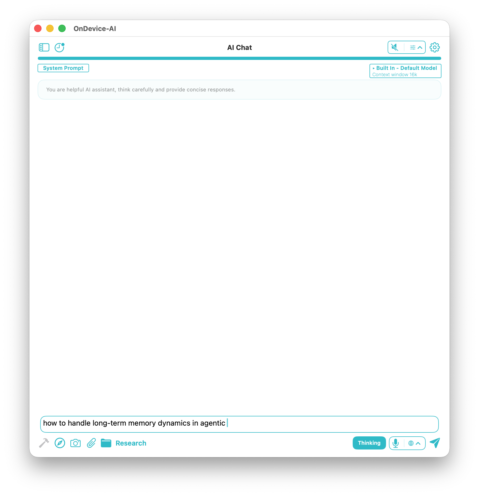

A project is more than its files
A useful project often begins in pieces: a note from a call, a few pages of research, a transcript, and a conversation where an idea finally clicked. The hard part is rarely saving any one of those things. It is finding the right material again when the next question arrives.
Knowledge Libraries give that material a home. Create a library for a client, course, research topic, or personal plan, then keep the parts that matter together.

Keep the work you will return to
Add PDFs, text files, images, and web captures when they belong to the project. Text Notes are useful for the small things that would otherwise live in a temporary document. A finished AI Search can be saved with its answer and useful sources. Voice Note transcripts and selected chat or speech history can join the same library too.
You do not need to collect everything. Keep what you'll actually reach for again: the source you'll cite, the note you'll reread, the transcript you'll quote.

Use it when the project comes back
Open AI Chat, select the relevant library, and ask the question in front of you. You might be preparing for a meeting, checking what an interview said, or picking up a piece of work after a week away. The library gives the conversation a place to start.
With a local model, your library never leaves the device and works fully offline on iPhone, iPad, Mac, and Vision Pro. It follows the same "Data Not Collected" approach the rest of the app uses. If you choose a cloud provider, treat it as a separate decision and consider what you send there.
Start with one library
You don't need a system. Pick one active project, add a note, a source, and one reference file. That's enough to make tomorrow's conversation smarter than today's. You can grow the library as the work grows.
Frequently asked questions
What is a Knowledge Library in On Device AI?
A Knowledge Library is a private project workspace where you keep the files, notes, transcripts, and saved AI Search results that belong together, then load that context into AI Chat when you need it.
Where is my library data stored?
With a local model, everything in the library stays on your device and works offline. If you choose a cloud provider, only what you send in that conversation leaves the device.
What can I add to a Knowledge Library?
PDFs, text files, images, web captures, Text Notes, Voice Note transcripts, and selected chat or speech history.